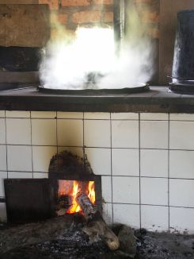
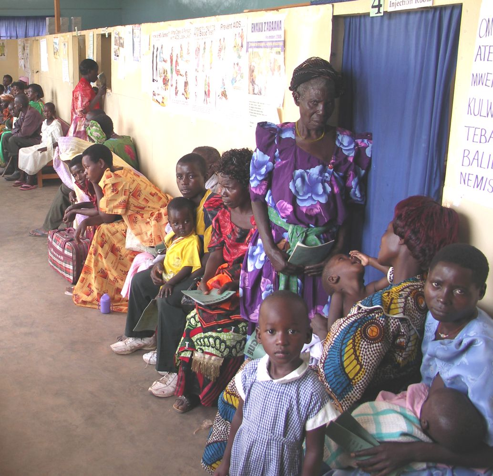

Mei 2007
Bram Moolenaar, penningmeester van ICCF Holland, bezocht het Kibaale Children's Centre in mei 2007. Dit is zijn verslag.
Klik op de foto's hieronder om een grotere versie te zien.
Nog meer foto's zijn hier te vinden
en nog meer op Picasa.

De afgebroken keuken in de voorgrond, de nieuwe in de achtergrond

Kookplaats in de nieuwe keuken
|
|
|
Geen nieuws is goed nieuws
Ik heb het project de afgelopen jaren regelmatig bezocht.
Mede daardoor was het dit keer redelijk
voorspelbaar. En dat is goed nieuws! Want het betekent dat het project
stabiel is en jaren lang heel veel kinderen in Kibaale helpt. Dat is best wel
bijzonder voor een project dat nu al bijna twintig jaar actief is.
Er zijn weer een aantal nieuwe gebouwen en activiteiten. Het meest opvallend
is dat de oude keuken is afgebroken. Dit was een van de oudste gebouwen op
het terrein en dat was te merken aan de scheuren in de muren. De nieuwe
keuken is niet alleen veel groter, met vier kookplaatsen, maar ook veel beter
schoon te houden. De vloer loopt schuin af en een goot leidt het afvalwater
naar buiten.
De kok is nog altijd dezelfde: Birra. Hij werkt al vanaf het begin voor het project. We zien dat het aantal jaren dat werknemers bij ons zijn steeds verder
stijgt, blijkbaar bevalt het werk ze goed. Het is fijn om bekende gezichten
te zien als ik op het terrein rond loop.
Een ander nieuw gebouw bevat twee praktijk lokalen voor de middelbare
school. Hier worden natuurkunde en scheikunde lessen gegeven. Het oude
praktijk lokaal wordt nu gebruikt voor tekenen. Daar hingen een aantal
prachtige schetsen.
Het gebouw van de kleuterschool wordt ook oud. Ik heb nog geholpen met de
bouw in 1993.
Het plan is om nieuwe lokalen voor de kleuterschool
te bouwen naast de lagere school, samen met twee lokalen voor speciaal
onderwijs (gehandicapten). Het oude gebouw wordt daarna gerenoveerd en
gebruikt voor bijeenkomsten en voor de lunch.
Ook nieuw zijn de zonnepanelen. Er zijn twee systemen geïnstalleerd, een bij
de gastenverblijven en een bij de leraren verblijven. De eerste werkt prima,
er is nu 24 uur per dag stroom. Heel handig om de computer te gebruiken en
's avonds laat licht te hebben. Bij de leraren is het probleem dat ze te veel
energie vretende apparatuur gebruiken, zoals een waterkoker. Daardoor is de
stroom al snel op. Daarom wordt 's avonds nog steeds de generator gebruikt.
Verder worden langzamerhand alle metalen regentonnen vervangen door kunststof
exemplaren. Die gaan veel langer mee. Ook voor de latrines zijn er nu
kunststof hokjes. De kosten hiervan zijn flink omlaag gegaan, we hebben goede
contacten met de leverancier. Het is nu zelfs voordeliger om een aantal
kunststof regentonnen te gebruiken in plaats van een grote gemetselde. Dit
wordt binnenkort bij de middelbare school gebouwd.
|
Kliniek
Het is er weer druk. Ik maak elke keer als ik het project bezoek dezelfde
foto van een wachtkamer vol met patiënten. Toch is de drukte nu meer als in
voorgaande jaren. Er is een nieuwe leidster voor de kliniek, en die doet haar
werk erg goed. Het resultaat is dat het aantal behandelingen sinds vorig jaar
met 50% is gestegen. Een deel daarvan is helaas veroorzaakt door de droogte
vorig jaar. Ondervoeding en slecht water resulteren in meer zieken.
Het is duidelijk dat de kliniek uit haar voegen is gegroeid. Het personeel
werkt ontzettend hard om alles aan te kunnen. Er is dringend meer personeel
nodig. Ook de ruimtes schieten te kort. De wanden zijn maar twee meter hoog,
er is geen privacy. Er zijn plannen om een kompleet nieuwe kliniek te bouwen.
Het is afwachten of we genoeg geld krijgen om dit voor elkaar te krijgen.
|
|
|

Weer een drukke dag in de kliniek
|

Dennis, een van de gesponsorde kinderen die ik heb opgezocht
|
|
|
Kinderen
Ik heb weer een aantal kinderen thuis opgezocht.
Het is vooral te merken dat ze vorig jaar te leiden hebben gehad van de
droogte. Alle gezinnen die ik bezocht hebben extra voedsel gekregen. Ook was
het voor sommigen erg moeilijk om aan water te komen, omdat de rivier was
drooggevallen. We hebben plannen om putten te slaan om te
voorkomen dat dit weer gebeurt.
Doordat al deze gezinnen een of beide ouders missen, ontbreekt het aan
middelen om het huis te onderhouden. Bij twee gezinnen hebben we al een
nieuwe keuken gebouwd. Bij een zag ik dat de keuken steeds verder afbrokkelt.
Dat komt doordat de muren zijn gemaakt van takken en klei. Gelukkig is er een
groep leraren en leerlingen die deze gezinnen helpt. Voor zover de materialen
goedkoop te krijgen zijn, voor de rest (raamkozijnen, dak) is toch sponsoring
nodig.
Voor de kinderen is het ook belangrijk lekker te kunnen spelen. Bij de lagere
school zijn nu twee speelplaatsen gemaakt, met wippen, schommels en zelfs een
glijbaan. Ze hebben er veel plezier, er wordt veel gelachen.
|
Internet
De internet verbinding die ik de vorige keer had opgezet, gebruik makende van
een mobiele telefoon en een speciale antenne, werkte nog steeds, min of meer.
Er waren zo nu en dan problemen, afhankelijk van het weer en de apparatuur van
MTN, het telecommunicatie bedrijf. Tijdens mijn bezoek werkte e-mail meestal
niet. En de kosten worden berekend per Kbyte, dus is het erg duur om grotere
bestanden te sturen, zoals foto's.
We hadden al eerder gepraat over het gebruik van een satelliet verbinding.
Het is duur, maar heeft als voordeel dat het betrouwbaar werkt en de
verbinding gaat direct naar buiten Uganda, dat vermijdt de bottleneck (Uganda
heeft geen fiber verbinding met het internet). Een voorwaarde is dat stroom
beschikbaar is. Nu er zonne-energie is, is dat een stuk simpeler.
Terwijl ik in Kibaale was hebben we nog een keer gekeken naar de
alternatieven, en vonden een bedrijf, AFSAT, dat betaalbaar is. De prijzen
zijn het afgelopen jaar flink naar beneden gegaan. Gelukkig was er ook een
bezoeker die bereid was om het te sponsoren. Nu ik dit schrijf is de
verbinding geïnstalleerd! Voorlopig zal het gebruikt worden door het
administratieve personeel. Hopelijk kunnen we het later ook beschikbaar maken
voor de leraren en de kinderen. Dit opent een wereld aan nieuwe
mogelijkheden.
|
|
|

Kinderen spelen in de nieuwe speeltuin bij de school
|
De toekomst
Vorig jaar was de droogte een groot probleem. Momenteel stroomt er weer wat
water door de rivier, maar men vreest dat het in augustus weer droog zal
vallen. Daarom is er een plan gemaakt om vijf waterputten te boren. De pomp
op het project toont aan dat het systeem om ijzeroxide uit het water te
filteren goed werkt. Zonder dit filter is het water vies en niet geschikt om
te drinken. Ik hoop dat we dit snel voor elkaar kunnen krijgen.
Kibaale is een kleine plaats en toegang tot informatie is moeizaam. Boeken
zijn lastig te krijgen en voor de meesten te duur. Ik hoop dat we internet
beschikbaar kunnen maken voor leraren en studenten. Daarmee geven we ze
toegang tot een enorme hoeveelheid kennis. Dit zal vooral de betere
leerlingen meer kans geven zich te ontwikkelen.
Al met al ziet het er hoopvol uit. Er is nog ontzettend veel werk te doen,
maar langzaam aan gaat het de goede kant uit. In ieder geval is het duidelijk
dat de hulp die we hier verlenen heel hard nodig is en ook echt de kinderen
helpt.
Bram Moolenaar
meer foto's
nog meer foto's op Picasa
top
|


{kind=link}
{kind=link}